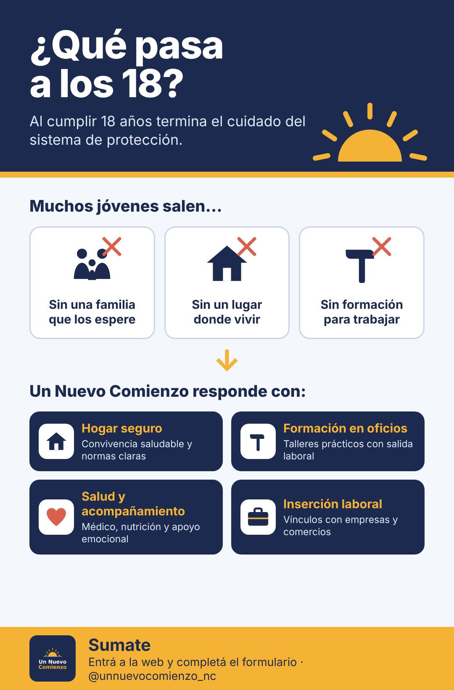
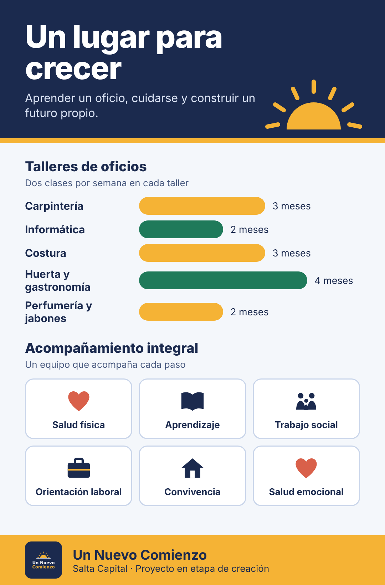

Salta Capital · Proyecto en etapa de creación
Un Nuevo Comienzo
Un hogar de acompañamiento, formación y desarrollo integral para jóvenes que egresan de hogares de protección. Un lugar para crecer, aprender, descubrirse y construir un futuro propio.
Formación en oficios
Carpintería, informática, costura, huerta y gastronomía, y perfumería artesanal, con salida laboral.
Acompañamiento integral
Salud, nutrición, psicología, estudios y orientación para construir un proyecto de vida.
Sumate
Si sos profesional, docente, empresa o vecino, tu tiempo y tus conocimientos pueden cambiar un comienzo.
Mirá el video
Quiénes somos
Un Nuevo Comienzo es un proyecto que propone crear un hogar de acompañamiento, formación y desarrollo integral para jóvenes mayores de 18 años que egresan de hogares de protección en Salta.
Al cumplir la mayoría de edad, muchos de ellos llegan sin una red familiar de contención, sin recursos para vivir de forma independiente y sin formación laboral. Queremos ofrecerles algo más que un lugar donde vivir: oportunidades, conocimientos y la posibilidad de sentirse parte de una comunidad que cree en ellos.
El proyecto está en etapa de creación y busca sumar profesionales, empresas, instituciones y vecinos. Esta web es el trabajo final de la Tecnicatura Superior en Locución Integral del IES N° 6053 “Abuelas de Plaza de Mayo”, de Salta.
Conocé el proyecto
Un recorrido por el proyecto.
Quién lo hizo
Soy Marcela Mora y te cuento de qué trata esta web.
Qué ofrece
Talleres de oficios
Carpintería 3 meses
Informática 2 meses
Costura 3 meses
Huerta y gastronomía 4 meses
Perfumería y jabones autóctonos 2 meses
Educación y desarrollo personal
- Alfabetización y apoyo escolar
- Educación financiera
- Orientación vocacional y laboral
- Currículum y entrevistas
- Comunicación y expresión oral
- Habilidades sociales
Acompañamiento
- Salud física
- Nutrición
- Salud emocional
- Aprendizaje
- Trabajo social
- Actividad física
- Desarrollo personal
Las duraciones son una propuesta y se ajustarán con los profesionales que se sumen.
Recursos de Google Drive
Acá encontrás los planes de estudio de los talleres y el material del proyecto: una propuesta, una presentación y las planillas de trabajo.
Planes de estudio de los talleres
Cada taller tiene 4 módulos. Se cursa dos veces por semana, con un 80 % de práctica en el taller y un 20 % de teoría aplicada y educación financiera básica. Está pensado para jóvenes desde los 18 años que egresan de hogares de protección.
Carpintería · 3 meses · 24 clases
- Módulo 1. Seguridad e higiene en el taller; reconocimiento de maderas nativas (pino, roble y maderas recicladas); uso de herramientas manuales y eléctricas.
- Módulo 2. Técnicas de medición, corte, unión y armado de estructuras básicas.
- Módulo 3. Restauración de muebles y fabricación de objetos utilitarios de alta demanda: estantes, organizadores, cajones y mesitas.
- Módulo 4. Acabados, lijado, pintura y barnizado; nociones básicas de presupuestos y comercialización.
Informática · 2 meses · 16 clases
- Módulo 1. Alfabetización digital avanzada: sistemas operativos, archivos en la nube y seguridad informática básica.
- Módulo 2. Ofimática práctica: procesadores de texto y planillas de cálculo (presupuestos) y armado de currículum.
- Módulo 3. Herramientas de comunicación laboral y gestión del correo electrónico.
- Módulo 4. Introducción al marketing digital y uso estratégico de redes sociales para buscar trabajo o promover emprendimientos propios.
Costura · 3 meses · 24 clases
- Módulo 1. Introducción a la máquina de coser (familiar, recta y overlock); reconocimiento de telas, hilos y agujas.
- Módulo 2. Toma de medidas, moldería básica y patronaje de prendas.
- Módulo 3. Confección de prendas utilitarias y arreglos de ropa: reparaciones, dobladillos y colocación de cierres y avíos.
- Módulo 4. Diseño y producción de productos textiles de salida comercial rápida: bolsos ecológicos, delantales, cartucheras y ropa blanca.
Huerta y gastronomía · 4 meses · 32 clases
- Módulo 1. Huerta: preparación de la tierra, siembra de temporada, riego, abono orgánico, control biológico de plagas y cosecha de verduras y aromáticas locales.
- Módulo 2. Gastronomía tradicional: platos típicos salteños (empanadas, humitas y locro) con técnicas de cocina e higiene bromatológica.
- Módulo 3. Cocina saludable: menús balanceados, cocina baja en calorías y aprovechamiento de productos frescos de la huerta.
- Módulo 4. Costos de producción, manipulación higiénica de alimentos y armado de viandas para venta directa o emprendimientos gastronómicos.
Perfumería y jabones autóctonos · 2 meses · 16 clases
- Módulo 1. Introducción a la cosmética natural artesanal; propiedades de aceites vegetales, bases de glicerina y materias primas regionales.
- Módulo 2. Jabones de tocador artesanales con elementos de la flora salteña (jarilla, muña-muña, arcillas regionales y esencias florales).
- Módulo 3. Perfumes, colonias y esencias botánicas con técnicas de maceración y combinación de aromas.
- Módulo 4. Empaque sostenible, diseño de etiquetas, presentación del producto y estrategias de comercialización artesanal.
Propuesta en etapa de creación: los contenidos y la duración pueden ajustarse con los profesionales y docentes que se sumen.
Propuesta del proyecto (Documento)
Presentación (Slides)
Cronograma y presupuesto (Planilla)
Galería de videos
Mirá los videos del proyecto.
Un nuevo comienzo
¿Qué pasa a los 18?
Por qué lo hago
Sumate
Spots de audio
Escuchá los dos spots del proyecto. Debajo de cada uno está el texto, para leerlo.
Spot 1: Un nuevo comienzo
Leer el texto
Cumplís dieciocho años. Para muchos, es motivo de festejo. Para los jóvenes que viven en hogares de protección, también es el día en que tienen que irse. Muchos salen sin una familia que los espere, sin un lugar donde vivir y sin un oficio. Por eso nace Un Nuevo Comienzo: un hogar para aprender, cuidarse y construir un futuro propio, acá, en Salta. Conocelo. Entrá a la web y sumate.
Spot 2: Sumate
Leer el texto
¿Sabés carpintería? ¿Cocinás? ¿Enseñás? ¿Tenés un comercio o una empresa? Una hora de tu tiempo puede cambiarle el comienzo a un joven de Salta. Un Nuevo Comienzo busca profesionales, docentes, empresas y vecinos que quieran ayudar. Entrá a la web, completá el formulario y sumate.
Agenda
Actividades previstas del proyecto. Las fechas son una propuesta y pueden cambiar.
Próximas actividades
| Fecha | Hora | Actividad |
|---|---|---|
| 26 de noviembre de 2026 | 18:00 | Encuentro de presentación del proyecto |
| 1 de diciembre de 2026 | 18:00 | Convocatoria a profesionales de la salud y la educación |
| 3 de diciembre de 2026 | 10:00 | Taller de muestra: huerta y cocina regional |
| 9 de diciembre de 2026 | 18:30 | Encuentro con empresas y comercios |
| 12 de diciembre de 2026 | 10:00 | Jornada de voluntariado: carpintería y costura |
| 17 de diciembre de 2026 | 18:00 | Charla abierta: ¿Qué pasa a los 18? |
Ubicación
Zona de trabajo proyectada: Salta Capital. La sede todavía está en etapa de definición; cuando exista, se va a indicar acá.
Contacto
¿Querés sumarte o tener más información? Escribinos. Este formulario es para adultos que quieran colaborar.
Juegos y herramientas
Infografías


Juego 1: memotest de oficios
Encontrá cada oficio con lo que se puede hacer con él.
Juego 2: trivia del nuevo comienzo
Herramientas
Reloj de Salta
Temporizador de estudio
Clima en Salta
Cargando el clima…
Accesibilidad
Esta web busca ser fácil de usar para todas las personas.
En este sitio
- Botones A- y A+ para cambiar el tamaño de la letra.
- Botón Contraste para pasar a alto contraste.
- Enlace para saltar directo al contenido.
- Se puede usar completo con el teclado.
- Se adapta a celular, tablet y computadora.
En los videos y las imágenes
- Todos los videos tienen subtítulos.
- Las imágenes y las infografías tienen descripción escrita para lectores de pantalla.
- Los colores tienen buen contraste.
Bitácora de IA y prompts
La IA propone; la autora cura, depura y edita. Acá se documenta cómo se trabajó con inteligencia artificial.
Prompt Madre
[ROL / IDENTIDAD]: Actúa como el Director de Comunicación y Estratega Transmedia Senior de Un Nuevo Comienzo, hogar de acompañamiento, formación y desarrollo integral para jóvenes que egresan de hogares de protección, en Salta Capital. [CONTEXTO Y AUDIENCIA]: El cliente opera en el rubro de acción social y formación sociolaboral en Salta Capital, Salta. Su público principal son personas de 18 a 25 años que buscan contención, formación en oficios y oportunidades laborales. Su público de apoyo son profesionales, empresas, organismos públicos y vecinos que buscan formas concretas de colaborar. [TONO Y VALORES]: Tu estilo comunicacional es cercano, esperanzador, educativo y respetuoso. Los valores innegociables de la marca son la dignidad de cada joven, el respeto, la solidaridad, la responsabilidad y la cooperación. Nunca uses lenguaje de lástima ni expongas datos que identifiquen a una persona. [MATRIZ DE FORMATOS]: Generarás estructuras para: 1. Guiones audiovisuales a dos columnas (Imagen/Audio); 2. Scripts para spots sonoros; 3. Microcopys UX y código/estructura HTML/CSS para el portafolio web; 4. Copys persuasivos para redes sociales. [REGLAS Y RESTRICCIONES]: Evita clichés genéricos. Incorpora modismos locales adecuados (voseo salteño). Cada propuesta debe incluir una Llamada a la Acción (CTA) clara. No inventes datos, cifras ni testimonios. [COMANDO DE ACTIVACIÓN]: Espera mis instrucciones. Responde confirmando recepción mediante el Resumen Ejecutivo de la marca.
Prompts derivados
- Copy de Instagram de 40 palabras para convocar a nutricionistas voluntarios, con llamada a la acción.
- Guion a dos columnas de un spot radial de 30 segundos para convocar a empresas.
- Microcopy del botón y del mensaje de confirmación del formulario de contacto.
Qué se cambió o se descartó
- Se descartó el video testimonial: se reemplazó por el Reel “Por qué lo hago”, a cámara.
- Se redujo la cantidad de Reels a 4 y el cronograma a 4 semanas, como pide la cátedra.
- Los números de las metas son una propuesta y se validan con datos reales.
Equipo
Marcela Mora
Estudiante de la Tecnicatura Superior en Locución Integral del IES N° 6053 “Abuelas de Plaza de Mayo”, de Salta.
En este proyecto me ocupé de la estrategia, la producción audiovisual y sonora, y el diseño y la programación web, trabajando con IA generativa y revisando todo lo que produjo.